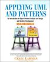
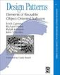
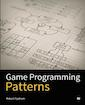

Sprint 0: Course Introduction
Table of Contents
- 1. About This Sprint CoursePM
- 2. User Stories covered in this Sprint
- 3. Introduction
- 4. Learning Material
- 5. Experiential Learning
- 6. Sprint Acceptance Tests
1 About This Sprint CoursePM
This sprint introduces the course and the course structure. This sprint also serves as the required Course PM to explain in more detail how the couse is going to be conducted in relation to the course syllabus.
The following courses are covered by this course PM:
| Course Code | Name | Extent (in ECTS) | Programme(s) |
|---|---|---|---|
| PA1415 | Programvarudesign | 7.5 | BSc i Spelprogrammering |
| PA1434 | Grunder i Objektorienterad Design | 4 | |
| PA1435 | Objektorienterad Design | 6 | CI i Spel- och Programvaruteknik, CI i Industriell Ekonomi |
| PA1443 | Introduktion till Programvarudesign och Arkitektur | 5 | BSc i Programvaruteknik, BSc International Software Engineering |
2 User Stories covered in this Sprint
- As a student I want to pass this course.
- As a student I want to understand how this course is structured so that I can quickly find the information I need to learn the subject.
- As a student I want to know why this topic is important so that I can be properly motivated.
- As a university we require all courses to have a “Course PM” so that the students can get further information about the courses they are taking.
3 Introduction
Welcome to the course!
Of course you want to pass the course, and I want you to too. This document is intended to give an overview of how the course is structured, and give you a “map” of sorts to the rest of the course material. It is my hope that this will help you find the material you want easily so that you can focus on learning each part of the course.
The course is divided into a series of Sprints, that is, short iterations that focus on a small number of issues per sprint. I have borrowed this term from an agile development methodology called Scrum, which is something you will learn more about in this course and are sure to encounter in your future career as well.
Speaking of agile, there are a few other things I have borrowed from there as well. The User Stories that each sprint document starts with is one such thing. A user story is a sort of stylised requirement, and I use them to set you into the right frame of mind for each sprint. As you notice, the user story contains information about which perspective you should have, the goals you should achieve, and a brief explanation of why this goal is important.
Related to this is the Sprint Acceptance Tests that you find at the bottom of each sprint document. These acceptance tests tell you how we plan on ensuring that the goal of the sprint has been reached.
The bulk of the sprint consists of Learning Material, and Experiential Learning. Learning material are book chapters, videos, blog posts, etc. that you can use to learn more about the topic in the sprint. Experiential Learning (which is not a good name, but I can’t think of any better) consists of different activities you should do as part of the sprint. Some of these activities are just practice activities. Others are activities that will help you organise the material better. Others again are those activities that we (as teachers) would like to look at to assess your progress. Let me repeat this:
Experiential Learning are things you are supposed to do, and includes:
- Things you do for practice
- Things you do to organise the material
- Things you may submit as assignments to the teachers for marking
You will note that in some sprints you are expected to produce an assignment document and commit/push it to your project repository without actually submitting it for marking. These documents are intermediate steps, and you will be using the knowledge gained from them when creating the documents that will be marked. In some cases, we will go back to them when marking a subsequent assignment to see that you have not missed anything. In other cases, we will go back to them to be able to follow your reasoning in your submission. I try to ensure that the overhead of creating these documents (as opposed to just doing the analysis/design work) is minimal. Please do not skip these documents just because they are not submitted; they are a helpful and sometimes necessary tool to be able to continue.
Exactly what documents you should deliver for marking is detailed in a set of Release Sprints, where you package and submit the previously created material.
Some activities are started during this initial sprint, and then I ask you to revisit them during every subsequent sprint. The idea with these activities are to help you structure your learning, and give you a means to follow your own progress.
So, without further ado, let’s get started with the learning material. Good Luck!
4 Learning Material
4.1 Course PM Overview CoursePM
Course Overview:
| Course Platform | ItsLearning and https://mickesv.github.io/OODesign/ |
| Further Information | |
| Course Responsible | Mikael Svahnberg, mailto:Mikael.Svahnberg@bth.se |
| Examiner | Mikael Svahnberg, mailto:Mikael.Svahnberg@bth.se |
| Other Teachers | Ricardo Britto, Raquel Ouriques |
4.1.1 2017 Schedules
Please see the individual page for each course:
| Course |
|---|
| PA1415 Software Design |
| PA1435 Object Oriented Design |
| PA1443 Introduction to Software Design and Architecture |
4.1.2 Common Information for all Courses
In all course-related communication, we prefer if you use your BTH-student email address. Using other email addresses or varying email addresses can lead to problems and issues that we cannot take responsibility for.
| Writing guide(s) | http://writingguide.se |
| Plagiarism and cheating | https://studentportal.bth.se/web/studentportal.nsf/web.xsp/plagiarism_and_cheating |
4.2 Overall Course Goals and Contents CoursePM
The overall goal in all the involved courses is to teach Object Oriented Design, and to understand how the design process fits into the overall development process. The involved courses takes a slightly different route towards this, where some focus more on the development process and the process components that lead up to the design process (PA1415), and others focus more on putting the design into a bigger technical context (i.e. the software architecture) (PA1443). The core of all courses is the Object Oriented Design, and we use UML and RUP for this part.
The detailed aims and contents for each of the courses are listed below (In swedish, copied from the respective course syllabus).
PA1415 Software Design
Syfte
För att kunna producera programvara som uppfyller rätt krav för rätt kostnad, inom rätt tidsram och med rätt kvalitet så krävs det att man följer en kontrollerad process och att man lägger tid på tidig planering av programvaruproduktionen (modellering och design). I den här kursen förväntas studenten införskaffa förståelse för en utvecklingsprocess för mjukvara och för de grundläggande aktiviteter och artefakter som tas fram under utvecklingsprocessen. Vidare förväntas studenten införskaffa förståelse för objektorienterad modellering och design genom användande av UML (Unified Modeling Language). Detta binds sedan samman i och med att studenten förväntas visa sina förvärvade kunskaper genom att utveckla ett mindre mjukvarusystem.
Innehåll
Kursen omfattar följande moment:
- Introduktion till programvaruteknik
- Introduktion till systemutvecklingsprocessen
- Introduktion till kravhantering
- Tids-, storleks-, resurs- och komplexitetsskattningar
- Planering av arbete
- Testning
- Objektorienterad design
- Grundläggande begrepp inom objektorienterad modellering
- Användarfall (use cases)
- Konceptuell modell samt systembeteende •Samarbetsdiagram
- Klassdiagram
- Tillståndsdiagram
- Designmönster
- Överföring av design till programkod
PA1434 Basic Object Oriented Design
PA1435 Object Oriented Design
Syfte
Kursens syfte är att ge insikt i den speciella design- och implementationsproblematik som objektorienterad programvaruutveckling medför. Utgående från grundläggande objektorienterade begrepp modelleras struktur och beteende hos objektorienterade system med hjälp av modelleringsspråket UML (Unified Modeling Language). Designprinciper och designmönster introduceras som verktyg för att skapa robust programvara och förbättra möjligheten till organisation och underhåll av programvara. Designmönster är standardiserade metoder för att sätta samman objekt och klasser för att lösa vanligt förekommande designproblem. Utvecklare av objektorienterad programvara bör veta hur designmönster kan användas för att förenkla utvecklingsarbetet och kunna bedöma kvaliteten och eventuella förbättringar av källkoden. Kursen omfattar laborationer där designkunskaperna tillämpas och implementeras i källkod.
Innehåll
Kursen omfattar följande:
- Grundläggande begrepp inom objektorienterad modellering.
- Strukturella och beteendemässiga perspektiv på objektorienterade system.
- Introduktion till modelleringsspråket UML (Unified Modeling Language).
- Diagramtyper i UML för användningsfall, klasser, interaktion och tillstånd.
- Grundläggande designprinciper exempelvis låg koppling, hög sammanhållning, inkapsling och polymorfism.
- Designmönster samt orientering om hur dessa kan användas.
- Förbättring av källkod genom s.k. reverse engineering.
PA1443 Introduction to Software Design and Architecture
Syfte
Val av mjukvarudesign och arkitektur har stark påverkan på kvalitet och kostnad för programvara. Syftet med kursen är att ge studenten grundläggande förståelse för tekniker och metoder för mjukvarudesign. Vidare skaffar studenterna grundläggande förståelse för hur dessa val av design och arkitektur påverkar kvalitet och därmed kostnad för utveckling, drift och underhåll för programvara. Kursen innehåller både teori och praktiska övningar där studenterna ges möjlighet att skapa programvarudesigner och arkitekturer, samt jämföra möjliga design- och arkitekturlösningar i olika typer av mjukvarusystem.
Innehåll
Kursen omfattar följande moment:
- Introduktion till Objektorienterad Design
- Introduktion till Programvaruarkitekturer
- Grundläggande begrepp inom objektorienterad designmodellering
- Grundläggande objektorienterade designprinciper
- Designmönster
- Mjukvaruarkitekturstilar
- Överföring av design till programkod
- Testning
4.3 Course Structure CoursePM
The course has an online presence as well as a campus existense.
The online presence consists of these pages, and is organised as a set of sprints, where each sprint focus on a small topic and a few user stories. In each sprint there are things to read and watch, as well as activities to do. The result of some of those activities will be submitted as assignments for marking. This is further detailed in Release Sprints where instructions about which documents to deliver are given.
The campus existense consists of lectures (that I try to run as seminars) and exercises. My idea is that you first study the online material, and then we can have lively discussions during the lectures/seminars. Basically, you go through the design notation and a basic understanding of the topic with the online material and then we discuss together what makes a good design.
Some of ther sprints are so called release sprints. In these sprints you primarily package what you have done in previous sprints, but you may also be requested to produce new material during the release sprint too. This is then delivered as a course assignment for marking.
Please see the Start Page for each course for information about which sprints, lectures, seminars, and assignments are relevant for each course.
4.4 Learning Outcomes CoursePM
The following learning outcomes apply to the different courses.
| Course Code | Learning Outcomes |
|---|---|
| PA1415 | - på en grundläggande nivå i grupp kunna ta fram krav på en programvara och uttrycka dem i en kravspecifikation |
| PA1415 | - i grupp producera en översiktlig utvecklingsprojektplan baserat på en kravspecifikation |
| PA1415 (PA1435/PA1434) | - i grupp kunna skapa en detaljerad objektorienterad design för ett mjukvaruprogram |
| PA1415 | - i grupp kunna implementera ett mjukvaruprogram inom rimlig tid, baserat på en kravspecifikation och en objektorienterad design |
| PA1415 (PA1443) | - på en grundläggande nivå i grupp kunna planera och genomföra testning av producerad programvara, baserat på en kravspecifikation |
| PA1415 (PA1435/PA1434) | - skapa och analysera objektorienterade artefakter uttryckta i UML |
| PA1415 (PA1435/PA1434/ PA1443) | - kunna motivera och använda designmönster i utvecklingen av mjukvarusystem |
| Kunskap och förståelse | |
| PA1435/PA1434/ PA1443 | - kunna visa förståelse för grundläggande principer i objektorienterad programvaruutveckling. |
| PA1435/PA1434 | - kunna visa förståelse för UML som modelleringsspråk. |
| PA1435/PA1434/ PA1443 | - kunna visa kunskap om grundläggande designprinciper. |
| PA1435/PA1434/ PA1443 | - kunna visa kunskap om grundläggande designmönster. |
| PA1443 | - kunna visa kunskap om grundläggande mjukvaruarkitekturstilar |
| Färdigheter och förmåga | |
| PA1435/PA1434/ PA1443 | - kunna uttrycka strukturen och beteendet hos ett system i termer av objektorienterade koncept. |
| PA1435/PA1434 | - kunna korrekt använda UML för att uttrycka struktur och beteende hos ett system. |
| PA1435/PA1434 | - kunna korrekt transformera en objektorienterad design till källkod. |
| PA1435/PA1434 | - kunna tillämpa designprinciper och designmönster i allmänhet och inom en särskild domän. |
| PA1443 | - kunna tillämpa grundläggande designmönster i en objektorienterad design. |
| PA1443 | - kunna skapa en objektorienterad design för ett system enligt goda objektorienterade designprinciper |
| PA1443 | - kunna tillämpa grundläggande arkitekturstilar för ett mjukvarusystem |
| PA1443 | - kunna resonera om de kvalitetsegenskaper ett system med en viss arkitekturstil har eller bör ha |
| PA1443 | - kunna resonera om och skapa en grundläggande testplan för ett objektorienterat system |
| Värderingsförmåga och förhållningssätt | |
| PA1435/ PA1434 | - kunna analysera källkod för eventuella förbättringar. |
| PA1435/PA1434/ PA1443 | - kunna analysera och kritiskt diskutera en design för eventuella förbättringar. |
4.5 Examination CoursePM
4.5.1 Assignments
Assignments in the courses are:
| Course | Assignment | Moment in LADOK |
|---|---|---|
| PA1415 | 3 Week Roll Call | |
| Assignment 1: User Stories and Use Cases | ||
| Assignment 2: Object Oriented Design | ||
| Assignment 3: Implementation and Testing | ||
| Together these form the moment: | 1415 Laboration, 4.5hp, A-F | |
| PA1434 | 3 Week Roll Call | |
| Assignment 1: Use Cases | 1515 Laboration 2, 0.5hp, G-U | |
| Assignment 2: Object Oriented Design | 1505 Laboration 1, 1.5hp, A-F | |
| PA1435 | 3 Week Roll Call | |
| Assignment 1: Use Cases | 1515 Laboration 2, 0.5hp, G-U | |
| Assignment 2: Object Oriented Design | 1505 Laboration 1, 1.5hp, A-F | |
| Assignment 3: Implementation and Testing | 1535 Laboration 3, 2hp, A-F | |
| PA1443 | 3 Week Roll Call | |
| Assignment 1: Use Cases | ||
| Assignment 2: Object Oriented Design | ||
| Assignment 3: Architecture and Testing | ||
| Together these form the moment: | 1705 Laboration, 4hp, A-F |
Please see the Start Page for each course for more information about the assignments, how they map to course goals, and their respective deadlines.
4.5.2 Written Exam
The written exam will be a computer-based exam.
Dates for the written exams for the next 12 months can be checked on the student portal at https://studentportal.bth.se/web/studentportal.nsf/web.xsp/prescheduled_dates .
4.5.3 Deadlines and re-examination
Assignments:
- Initial Deadlines Please see the Start Page for each course for more information about the assignments and their respective deadlines.
- First Resubmission This deadline applies for all assignments unless otherwise agreed with the person marking the assignments and/or the examiner of the course.
- Second Resubmission This deadline applies for all assignments unless otherwise agreed with the person marking the assignments and/or the examiner of the course.
Exam:
- Dates for the written exams for the next 12 months can be checked on the student portal at https://studentportal.bth.se/web/studentportal.nsf/web.xsp/prescheduled_dates .
4.6 What should I do with the Sprint Test Plan?
The Sprint Test Plan is a way to get an overview of your expectations in the course, in relation to the provided material, and align it with my expectations as course responsible and examiner. In some sense, it is also your strategy for learning the topics. I will not mark your Sprint Test Plan – you are creating and maintaining this for your own sake.
The Sprint Test Plan will be revisited during every sprint, so that you have an updated record of what you need to learn to pass the course.
I am loosely basing my suggestion for the Sprint Test Plan document on the IEEE 829-2008 standard. Feel free to add other information to it if you think it is relevant.
4.7 What is this “Course Backlog” thing?
As you study, I expect that you will get more questions, or additional information sources (blog pages etc.) that you would like to read, and I hope you will also get ideas for places where you would like to test what you have learnt. Put these into a course backlog document (it will help if you put them in a roughly prioritised order), and then spend time during each sprint to resolve your backlog items.
At the end of the course, it is my hope that your backlog contains pointers to yourself with how you should go forward with the knowledge gained. For example, how can you use what you have learnt in upcoming courses? Are there any particularly interesting things you have found that you would like to study more? Are there any courses you are interested in taking as a consequence of taking this course? Are there any courses you would like to replace in your education as a consequence of taking this course? Are there any ideas you can use for your bachelor or master’s thesis?
The course backlog is revisited in every sprint. I will not mark it; you create it for your own benefit.
5 Experiential Learning
5.1 (Optional) Create Infrastructure
Introduction. In your future career you are going to use configuration management systems such as Subversion or Git, so why not start already now? This gives you an easy way to share work between your colleagues, and opens up for me to review your work even before you have submitted it.
If you also write your documents in for example Markdown, they are formatted for you by github. Myself, I am partial to Org-mode and Emacs, especially because of the nice integration with PlantUML for generating design diagrams and the excellent export facilities. Org-mode is also nicely supported by github.
Please note that this is currently optional. I do not require you to create a repository on github (or anywhere else, for that matter), but I strongly recommend that you start familiarising yourself with modern configuration management tools already now. Moreover, if you were to run into conflicts within your group, the commit record of a configuration management repository is an excellent starting point to figure out who has contributed what.
Things to do:
- Create an account on Github (or use your existing one)
- Create a Project for the course
OOD-<course code>-<your name> - (optional) Invite me (mickesv) to the project
- checkout your project and create a directory structure:
/Assignments//SprintTestPlan//CourseBacklog/
- add a file to each directory, otherwise you will not be able to commit them. For example, add an empty
.gitignorefile to each directory. - commit and push
More info on Git
5.2 Sprint Test Plan
Create a document with the following sections:
- Test Items. These are the assignments you are expected to submit for marking. It will probably be a good idea if you are able to tag them with the corresponding sprint, so that you can easily find them.
- Features to be Tested. These are the user stories at the top of every sprint. Describe each of these features in terms of the object oriented modelling concepts or software development concepts that you need to master before you can satisfy the user story.
- Approach. Here, you will describe your strategy for ensuring that you have learnt the material in the sprint. How do you ensure that you are confident that the assignments you submit will pass with the grade you are aiming for?
- Item Pass/Fail Criteria. What do you have to be able to show to yourself to ensure that you have learnt the material in the sprint? What do you have to show in the submitted assignments?
- Schedule. When do you plan on passing each test item and feature?
- Planning Risks and Contingencies. Are there any foreseeable risks that may limit your ability to pass the course on time? What is your contingency plan?
- Glossary. In this section you will build up a glossary of important terms in the course that you can use when studying. I suggest you collaborate with the rest of the class in the course discussion forum (on It’s Learning) and post your terms and definitions there so that they can be discussed.
In this sprint, the following items can be added already (you may think of more items, please add them too):
- Test Items
- Exam Check Date
- Exam Re-sit Check Date
- Approach
- Outline your plan for reading the book and doing the sprints in time to be ready for the exam.
- Describe your plan for joining a group of students (for the group assignments, and for study groups) with the same ambition level as you yourself have.
- Item Pass/Fail Criteria
- Outline your ambition level; what grade are you aiming for?
- Schedule
- Dates for assignment submissions are available on It’s Learning. Copy them here.
- Add the exam dates.
- Planning Risks and Contingencies
- Do you plan on taking any vacations (e.g., skiing trip, easter, ascension day, etc.)? When will you study more to compensate for this? Are your team-mates informed and ok with that you contribute less during these vacations?
- What is the expected workload for the courses you may be taking in parallel? Does your plan for this course accomodate your plans for the other courses?
- Do you have time available if you are asked to complete your submitted assignments with more information?
- Are there any other risks you see at this stage?
- Glossary
- Scrum
- Sprint
- User Story
- Test Plan
5.3 Buy Course Books CoursePM
Main Literature (All Courses)

C. Larman, Applying UML and Patterns, Prentice Hall, 3rd Edition.
This book is a complete guide to all things UML, with plenty of examples and detailed descriptions of all diagrams and how to think when using them. The reading instructions in each sprint are based on the 3rd edition, but I recommend you to try to find an older edition since they are essentially the same but with less text.
Reference Literature (PA1415)
I. Sommerville, Software Engineering, Pearson, 8th edition, 2006.
There is also a 9th and a 10th edition (and, of course, the preceeding editions). It does not really matter which one you get. You will use this book as a reference to look up e.g. how a GANTT chart works in case the internet is down.
Reference Literature (PA1434, PA1435)

Gamma, Helm, Johnson, Vlissides, Design Patterns, Elements of Reusable Object-Oriented Software, Addison-Wesley Professional.
This book, also called the Gang of Four book is the reference work when it comes to design patterns. You will be using this book a lot in your future career. If you want to save some money, the most common design patterns are also covered in C. Larman (and these are the ones we will be focusing on in these courses).
Note to PA1415: I warmly recommend that you too get this book even if it is not oficially part of “your” course plan.

R. Nystrom, Game Programming Patterns, Genever Benning, 2014.
Also Available at: http://gameprogrammingpatterns.com/contents.html
Reference Literature (PA1443)

L. Bass, R. Kazman, P. Clements, Software Architecture in Practice, Addison-Wesley, 2012. ISBN-10: 0321815734
A general-purpose software architecture book. I find this book to be less hands on with a design methodology and more shoot-from-the-hip, but there is a large section on architecture tactics, i.e. solutions and structures that address different quality concerns. These are, I find, a great inspiration for the architectural decisions.
Gamma, Helm, Johnson, Vlissides, Design Patterns, Elements of Reusable Object-Oriented Software, Addison-Wesley Professional.
This book, also called the Gang of Four book is the reference work when it comes to design patterns. You will be using this book a lot in your future career. If you want to save some money, the most common design patterns are also covered in C. Larman (and these are the ones we will be focusing on in these courses).
5.4 Form Groups
We expect the assignments to be done in teans consisting of three to five people. Use the following (in this order) to find and/or form a team:
- Your friends
- It’s Learning
- First Classroom Lecture
- Course Teacher
Decide in your team how to deal with configuration management (e.g., who creates the git repository (remember to share it with me)), and decide on a schedule for when and how often you plan on working. If you know that you need to be out of touch for some reason (e.g. spring break), agree within the team how to handle this.
5.4.1 Groups for Seminars
In the seminars we aim at having 25-30 people per group. Use the following guidelines for an initial rough sort:
- Who is the oldest member in your team?
- What letter does his family name start with?
- Go to the seminar accordingly:
| Course | Start Letter | Seminar |
|---|---|---|
| PA1415 | A–N | Group 1 |
| O–Ö | Group 2 | |
| (other) | Group 2 | |
| PA1435 | A–N | Group 1 |
| O–Ö | Group 2 | |
| (other) | Group 2 | |
| PA1443 | A–N | Group 1 |
| O–Ö | Group 2 | |
| (other) | Group 2 |
It is desirable if your entire team visits the same seminar. Moreover, the above is intended as a rough sort. There may be all sorts of instances and special cases where it would be better for you (and your team) to visit another seminar session. Do so at your own discretion.
5.5 Get an Overview of the Assignments
Take a look at the Assignment Map to see which assignments are relevant for you and how they are connected to each other.
5.6 Update Course Backlog
Where do you go from here? Are there any questions already now that you want answered? Add them, along with a brief strategy for how to find an answer.
6 Sprint Acceptance Tests
You are done with this sprint when:
- You have bought the literature you want/need for the course.
- You have joined a group.
- You have read the Learning Materials
- You have reviewed the Assignment Map and are clear on what you are expected to submit, and in what order.
You may also have
- Created a github account, created a project repository, and committed/pushed the directory structure.
- Created a Sprint Test Plan
- Created a Course Backlog